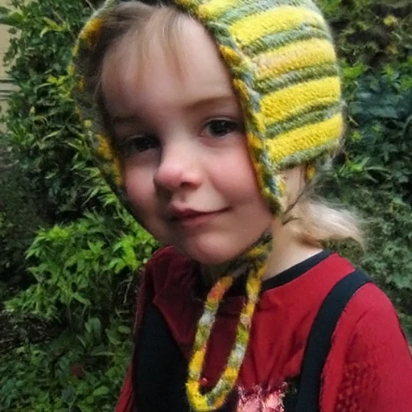

Frozen vision encoder \(\E\)
DINOv3, kept frozen in training and inference. It reads the noisy \(x_t\), not the clean image, and returns one token per 16-px patch on the same grid as the DiT.
Representation-Grounded Pixel Diffusion Transformers
1NVIDIA2University of Rochester
† Project Lead and Main Advising
TL;DR A frozen vision encoder reads the noisy image; its per-patch features ground a pixel diffusion transformer at every denoising step.

01 Motivation
Pixel diffusion has narrowed the quality gap with latent diffusion, yet it still converges more slowly and lags in final quality. We argue that a key reason is the lack of an explicit representation prior.
A pretrained autoencoder (AE) partly organizes the space before denoising. A decoder maps latents back to pixels.
Starting from raw RGB, one network must learn denoising representations and pixel generation at the same time.
A frozen encoder \(\E\) reads \(x_t\); the timestep-conditioned \(\Pg\) maps its tokens to grounding tokens \(\g\). No autoencoder, no decoder.
Learning denoising representations and pixel generation in one network is a coupling that can make learning harder and may increase the training budget. PixelDiT2 decouples representation learning from pixel generation without an autoencoder or a latent reconstruction bottleneck: a frozen vision encoder provides explicit per-patch representation guidance throughout denoising, so the pixel diffusion transformer can focus more on pixel generation.
02 The idea
At every denoising step, a frozen vision encoder reads the noisy image \(x_t\); after a timestep-conditioned projection, its per-patch features modulate the pixel DiT through spatial AdaLN, in training and in sampling. We call this representation grounding; diffusion stays fully in pixel space.
One denoising step
Hover, focus, or tap a part of the diagram for a one-line description.
DINOv3, kept frozen in training and inference. It reads the noisy \(x_t\), not the clean image, and returns one token per 16-px patch on the same grid as the DiT.
One DiT-style block with AdaLN on the timestep embedding. It maps raw tokens \(\gbar\) to grounding tokens \(\g\) and absorbs the encoder's drift on noisy inputs.
\(\g\) is the AdaLN condition of the DiT blocks, applied element-wise on the shared patch grid, so each patch is modulated by its own token. It stays active at inference.
03 Method
Steps 1–2 set up a plain single-path pixel DiT. Steps 3–7 add representation grounding, from the frozen encoder to the sampling loop.
Step 1
PixelDiT2 denoises raw pixels. A noisy sample \(x_t\) lies on the straight line from noise \(\textcolor{#b5651d}{\varepsilon}\) to the clean image \(x\).
The DiT cuts \(x_t\) into 16 × 16-pixel patches. A 256 × 256 image becomes \(L = 16 \times 16 = 256\) tokens.
Step 2
The DiT reads \(x_t\), the timestep \(\textcolor{#b5651d}{t}\), and the class label \(y\), and predicts the clean image \(\hat x_\theta\). The loss is taken on the velocity \(v = x - \textcolor{#b5651d}{\varepsilon}\).
\(\tau = 0.05\) guards against divergence as \(\textcolor{#b5651d}{t} \to 1\). Up to here, this is a single-path pixel DiT, similar to PixelDiT’s patch-level path, with x-prediction and a velocity loss following JiT.
Step 3
A pretrained DINOv3 encoder \(\textcolor{#3b73b9}{\mathcal E}\) reads \(x_t\), not the clean image, and stays frozen. Its patch size is also 16, so its \(L\) raw tokens align one-to-one with the DiT’s patch tokens.
DINOv3-S/16 at 256 px; DINOv3-B/16 at 512 px, where the grid is 32 × 32.
Step 4
\(\textcolor{#3b73b9}{\mathcal E}\) was pretrained on clean images. As \(\textcolor{#b5651d}{t}\) moves away from 1, the raw encoder tokens drift from the clean-image features, and the drop accelerates below \(\textcolor{#b5651d}{t} = 0.7\).
Scroll, or pick \(\textcolor{#b5651d}{t}\) on the stage. Readouts are the measured per-image mean cosine for DINOv3-S/16 Fig. 4a
Step 5
Noise-level adaptation happens outside the encoder, in \(\textcolor{#336b00}{P_g}\), a single DiT-style block whose AdaLN reads the timestep embedding \(\textcolor{#b5651d}{e_t}\).
Its output keeps cosine similarity above 0.77 to its own clean-input output at every \(\textcolor{#b5651d}{t}\), including pure noise. \(\textcolor{#336b00}{P_g}\) does not restore clean-image features; it emits a different, \(\textcolor{#b5651d}{t}\)-stable set of grounding tokens. Fig. 4a
Step 6
Grounding tokens \(\textcolor{#336b00}{\mathbf g_t}\) share the DiT’s \(L\)-patch grid. Inspired by DDT and PixelDiT, \(\textcolor{#336b00}{\mathbf g_t}\) is used directly as the spatial AdaLN condition: every DiT token is modulated by the grounding token at its own position, in every block.
Generic AdaLN form, shown as a schematic.
Step 7
Sampling integrates the flow ODE with a 50-step Heun solver. At every step, the frozen encoder re-reads the current \(x_t\).
For classifier-free guidance, the unconditional branch uses null grounding, which bypasses \(\textcolor{#3b73b9}{\mathcal E}\) and \(\textcolor{#336b00}{P_g}\). See Recipe.
Schematic: the stage frames mix \(x\) and \(\textcolor{#b5651d}{\varepsilon}\); they are not sampler outputs.
Representation grounding
Frozen encoderDINOv3 reads the noisy \(x_t\) and is never updated.
Timestep-conditioned projectionOne DiT block absorbs the drift on noisy inputs.
Spatial AdaLNPer-patch, per-block modulation of the DiT.
Active in training and at every sampling step. Training also keeps the standard REPA loss, whose target is a separate DINOv2-B/14 on the clean image; see REPA.
04 Where representations enter
Prior work uses pretrained features as training targets, as the space to be generated, or as variables generated alongside the image. PixelDiT2 runs the frozen encoder on the current noisy image at every step, in training and in sampling.
| Method | Role of pretrained features | Diffused variables | Encoder run during sampling? |
|---|---|---|---|
| Representations as supervision | |||
| Feature-alignment targets | Feature-alignment targets | VAE latents | ✗ |
| Alignment for joint VAE–DiT training | Alignment for joint VAE–DiT training | VAE latents | ✗ |
| Representations as a generation space | |||
| Representation space for diffusion | Representation space for diffusion | Patch features | ✗ |
| Prior for a learned tokenizer | Prior for a learned tokenizer | Compressed feature latents | ✗ |
| Representations as additional generation targets | |||
| Jointly generated global semantics | Jointly generated global semantics | VAE latents and a [CLS] token | ✗ |
| Jointly generated spatial features | Jointly generated spatial features | Pixels and patch features | ✗ |
| Representations as spatial conditioning | |||
| Spatial conditioning from \(x_t\) | Spatial conditioning from \(x_t\) | Pixels | ✓ |
The rows describe the formulations of the listed methods. A cross does not imply that pretrained knowledge is absent: it may be learned by the denoiser, define its generation space, or be represented by jointly generated features.
Spatial conditioning from \(x_t\)
The features act as spatial conditioning; only the pixels have a diffusion trajectory.
Running the frozen encoder at every sampling step adds inference cost (Limitations).
05 Results
Class-conditional ImageNet at 256×256 and 512×512, scored by FID-50K. PixelDiT2 samples with a 50-step Heun ODE solver and classifier-free guidance restricted to an interval.
PixelDiT2 against its predecessor PixelDiT, measured in training epochs.
Epoch 200
1.78FID
below PixelDiT's 1.81 at 850 epochs
Epoch budget
\( \dfrac{\textcolor{#7c877a}{850}}{\textcolor{#76b900}{200}} = 4.25\times \)
lower budget to surpass PixelDiT's 850-epoch FID
Epoch 680
1.48FID
IS 295.7, lowest FID among the pixel-space methods in Tab. 3
Epochs count passes over the data, not compute. PixelDiT2-H has 1074M parameters including its frozen DINOv3-B/16 grounding encoder; PixelDiT-XL has 797M (Tab. 3).
Class-conditional ImageNet with classifier-free guidance. The last column places every FID on one shared axis.
| Method | Budget | Params (M) | FID↓ | IS↑ |
|---|
* delayed grounding dropout: class dropout only until epoch 160, then independent class and grounding dropout (§09). Bold: best, underline: second best. Tab. 2
Parameter counts include the frozen DINOv3-B grounding encoder but exclude the training-only REPA target. Bold: best, underline: second best. Tab. 3
Trained with independent class and grounding dropout from initialization, PixelDiT2-H reaches FID 1.46 (IS 301.6) at 600 epochs. With delayed grounding dropout it reaches 1.48 at 480 epochs, improving on PixelDiT-XL (1.61 at 320 epochs) and JiT-G/16 (1.82 at 600 epochs, about 2B parameters).
Lower FIDs remain: SiD2 reports 1.38 (listed budget 1280), and the latent baselines in Tab. 2 reach 1.13 (RAE-XL) and 1.29 (REPA-XL). Those latent models use a separately trained tokenizer; PixelDiT2 does not.
PixelDiT2-H reaches FID 1.48 (IS 295.7) at 680 epochs, the lowest FID among the pixel-space methods in the table.
The latent RAE-XL remains lower at 1.13.
TakeawayPixelDiT2 surpasses PixelDiT's 850-epoch FID at 512×512 by epoch 200. Its final FID is also lower at both resolutions: 1.46 (600 epochs) vs. 1.54 (800 epochs) at 256×256, and 1.48 (680) vs. 1.81 (850) at 512×512. The best latent-diffusion baselines remain lower. Fig. 1, Tab. 2, 3, 14
All PixelDiT2 rows of the full 256×256 comparison.
Latent Forcing jointly generates pixels and spatial representation features. PixelDiT2 instead encodes the current noisy image at each step.
PixelDiT2 reaches FID 1.822 versus 2.287, with 1007.8M versus 1080.7M parameters. Latent Forcing has the higher IS: 295.7 versus 275.4. Tab. 12, App. B.2
06 Relation to REPA
REPA uses a pretrained encoder as a training target. Representation grounding uses one as an input at every denoising step. PixelDiT2 keeps both, and in a matched-encoder study the combination gives the lowest FID from epoch 320 onward.
Each path is switched on or off. Both active paths use DINOv3-S/16, removing encoder choice as a confound. Tab. 4
Early. At epoch 200, REPA alone and the combination are nearly identical, at FID 1.89 and 1.90. Grounding alone reaches 2.28, against 2.53 for the bare backbone.
Later. From epoch 320 onward, combining both gives the lowest FID at every evaluated epoch, improving from 1.70 to 1.59 by epoch 480. Over the same interval, REPA alone plateaus near 1.7, whereas grounding alone keeps improving from 2.08 to 1.83.
TakeawayOn the same backbone, grounding alone lowers FID at every evaluated epoch (2.53 → 2.28 at epoch 200, 2.19 → 1.83 at epoch 480). The two paths have different optimization profiles, and their complementarity emerges after the early training regime rather than appearing immediately. Tab. 4
07 What matters
Unless noted: PixelDiT2-H/16, ImageNet 256×256, 600 epochs, with separate sweeps over CFG scale and guidance interval.
FID-50K, lower is better. In each chart the hairline marks the default setting. Hover or tap a row to show that variant in the schematic.
Four ways to feed the same grounding tokens \(\g\) into the pixel DiT.
TakeawaySpatial AdaLN gives the lowest FID of the four tested mechanisms.
The experiment does not by itself isolate which property of AdaLN causes the advantage.
PixelDiT2-B/16, epoch 200, DINOv3-S/16. A REG-inspired baseline puts the encoder's [CLS] token in the in-context conditioning slot instead of modulating each patch. FID rises from 5.29 to 6.04.
Collapsing the grounding signal into one token erases the 16×16 spatial alignment that AdaLN exploits.
\(\E\) was pretrained on clean images but reads noisy \(x_t\). Should the encoder side absorb this shift?
TakeawayAll four adapted variants are worse. In the evaluated setting, these results favor preserving the pretrained encoder and adapting its output downstream.
This does not establish that \(\Pg\) alone determines performance.
PixelDiT2-B/16 at epoch 200. Replace the DiT-style \(\Pg\) with a linear projection and add one block to the DiT, so both models keep 143M trainable parameters.
TakeawayAt matched parameters, the timestep-conditioned DiT-style \(\Pg\) reaches FID 5.29, versus 6.79 for the linear projection. Its benefit is not interchangeable with placing the same capacity in the DiT.
Swap the frozen encoder \(\E\) on the grounding path, under the shared protocol.
TakeawayDINOv3-S/16 gives the lowest FID of the six. Larger DINOv3 encoders are worse at 256px under the shared evaluation at epoch 600.
A single-block \(\Pg\) may bottleneck higher-dimensional DINOv3-L features. Fix the grounding encoder to DINOv3-L/16 and widen or deepen \(\Pg\).
Doubling the width lowers FID at both epochs (1.82 → 1.78, 1.73 → 1.64); four blocks help only at epoch 320 (1.69). Neither reaches the DINOv3-S/16 reference of 1.59 at epoch 320.
PixelDiT2-H/16 at 512px. Grounding encoder DINOv3-B/16 or DINOv3-L/16; REPA target fixed to DINOv2-B/14.
DINOv3-L is lower at epochs 200, 320 and 400. At epoch 600, DINOv3-B is lower: 1.52 vs 1.54.
TakeawayLimited \(\Pg\) capacity may contribute to the negative S-to-L scaling at 256px, but does not fully explain it. In the evaluated 512px setting, the larger encoder speeds up early convergence without improving the later epoch. The results do not support a resolution-independent rule that smaller grounding encoders are always preferable.
Patch size 32 cuts the 512px token grid from 32×32 to 16×16. Can a larger DiT compensate?
TakeawayScaling H/32 to G/32 improves FID at every evaluated epoch, but G/32 stays behind H/16 at epoch 400: 1.625 vs 1.543. Replacing DINOv2-B with DINOv3-B as the H/32 grounding encoder gives a smaller, consistent gain.
Epoch budget. At matched H/32 scale, PixelDiT2 reaches 2.093 at epoch 200, below the authors' reproduction of JiT-H/32 at epoch 320 (2.321). The epoch budgets differ by 1.6×; this is not a wall-clock or iso-FLOP speedup.
08 Inside the model
Two diagnostics: what \(P_g\) does across noise levels, and how grounding changes the DiT's own features.
a Feature stability Fig. 4a
The drift is not specific to DINOv3. Per-image mean cosine similarity between \(\E(x_t)\) and \(\E(x_1)\) also collapses for DINOv2-B/14 and MAE-B/16 once the input becomes noisy, with the drop accelerating below \(t = 0.7\).
After the trained \(P_g(\cdot, t)\), the analogous similarity stays above 0.77 at every \(t\), including pure noise. \(P_g\) does not restore clean-image features; it emits a different, \(t\)-stable set of grounding tokens.
Input
\(x_t = t\,x + (1-t)\,\varepsilon\)
forward process on a PixelDiT2 sample
raw \(\E(x_t)\)
cos 0.44
\(P_g(\E(x_t), t)\)
cos 0.81
Reading the grids. Schematic, DINOv3-S/16. Each arrow is one token; its faint line is the token's direction at \(t = 1\). The spread is set so that the mean cosine across the grid equals the measured value at the selected \(t\). Drag the slider or click the chart; it snaps to the seven measured \(t\).
b Linear probing Fig. 4b
Following REPA, linear probes read the per-block hidden states of PixelDiT2-B/16 at epoch 200, which uses frozen DINOv3-S/16, \(P_g\), and REPA. The baseline is an iso-architecture REPA-only model, JiT-B/16 + REPA, without grounding tokens.
Inputs are clean. Every probe uses the null class token, so it cannot read the label off the in-context conditioning slot.
TakeawayWith grounding, probe accuracy exceeds the REPA-only baseline at every block: +38.5 points at block 0 (Fig. 4b) and a stable margin of about +8 to +10 points in the deeper half.
Both curves peak at the in-context-injection block, \(i = 4\). Past it, absolute accuracy drops in both because the null-class probe moves deeper layers off-distribution; the relative gap is the meaningful comparison.
09 Training and sampling recipe
Classifier-free guidance (CFG) needs an unconditional branch. Under representation grounding, replacing the class label with a null token is not enough to build one.
During training, the class token is replaced by a null token \(\varnothing\) with probability 0.1, as in standard CFG. The grounding tokens \(\g\), however, are computed from \(x_t\) and remain class-discriminative. A branch that drops only the class token can therefore still receive class information. §3.2
Each sample draws two independent Bernoulli masks with \(p = 0.1\): one for the class token, one for the grounding tokens. A dropped grounding uses the null grounding tokens instead of \(\Pg(\E(x_t), t)\). §3.2, §4
The unconditional CFG branch uses the null class token and the same null grounding tokens, matching the training distribution. The two branches combine in the standard CFG form, with guidance applied only inside an interval of \(t\):
The null-grounding branch also changes optimization. Three H/16 runs on ImageNet-256 use different grounding-dropout schedules; class dropout is active in all three. §4.2, Fig. 3
TakeawayGrounding dropout plays two empirical roles: it matches the null-grounding distribution that CFG requires, and it is associated with steadier late-stage FID. It need not start at initialization.
A single delayed run suggests a curriculum: first learn the grounded denoising function, then spend a shorter phase on the matched null-grounding branch. GLIDE is an earlier precedent; it introduced text-condition dropout only during fine-tuning. §4.2, Fig. 3 right
Unless stated otherwise, the paper applies class and grounding dropout from the start of training. The delayed run is reported separately (PixelDiT2-H*, FID 1.48 at epoch 480, Tab. 2).
The guidance scale \(w\) and the interval are swept per backbone scale and epoch. §4, Tab. 10
Stronger guidance raises IS and FID together. Extending the interval's upper bound from 0.9 to 0.975 raises FID from 1.4622 to 1.6202, while IS moves from 301.6 to 303.2. The lowest FID in these one-dimensional sweeps, 1.4622, is at \(w = 2.4\) on \([0.125, 0.9]\), the headline configuration. App. B.3, Tab. 13
\(N\) Heun steps cost \(2N\) network evaluations (NFE); \(N\) Euler steps cost \(N\). At NFE = 100, Heun-50 reaches FID 1.50 and Euler-100 reaches 1.54. At NFE = 50 the order reverses: Heun-25 1.76, Euler-50 1.72. IS favors Euler-100, 300.8 vs. 292.2.
The paper reports Heun-50 because it is FID-optimal at matched compute. App. B.4
This sweep uses H/16 at epoch 320, trained with delayed grounding dropout, and \(w = 2.4\) on \([0.1, 0.9]\). The CFG factor of two is paid by both samplers and omitted from NFE.
The grounding encoder runs on \(x_t\) in training and sampling. Unless stated otherwise, the DiT, \(\Pg\), and the REPA head are optimized jointly from scratch under one optimizer. The 512 px component counts are measured at epoch 680.
10 Samples
Class-conditional ImageNet samples from PixelDiT2: selected sets at 512×512 (Fig. 1) and 256×256 (PixelDiT2-H/16, Fig. 2), and uncurated sets at 256×256 (PixelDiT2-H/16, Figs. 6–7). Select any image to enlarge it.
The slider applies the forward process to finished samples (\(t = 1\) clean, \(t = 0\) pure noise). Tiles enter the same way. Neither is the model's sampling trajectory.
11 Limitations
01
On ImageNet 256×256, the best latent baselines still reach lower FID than PixelDiT2-H: RAE-XL 1.13 and REPA-E 1.15, against 1.46. Tab. 14
Selected latent-diffusion baselines from Tab. 14.
02
Grounding evaluates \(\E\) on \(x_t\) at every sampling step, which adds inference cost: DINOv3-S/16 (21.6M parameters) at 256 px and DINOv3-B/16 (85.7M) at 512 px. Tab. 10
PixelDiT2-H/16; parameter counts in millions. The REPA target, DINOv2-B/14, is training-only and is not counted.
Future work Address both limitations, and apply the architecture to scaled text-to-image generation.
We hope our findings encourage future pixel-space generative models to treat representations not only as auxiliary training targets but as active components of the denoising computation.
Citation
@article{yu2026pixeldit2,
title = {PixelDiT2: Representation-Grounded Pixel Diffusion Transformers},
author = {Yu, Yongsheng and Xiong, Wei and Sheng, Yichen and Liu, Shiqiu and Luo, Jiebo},
journal = {arXiv preprint arXiv:2609.24919},
year = {2026}
}PixelDiT2 builds on PixelDiT: project page · arXiv:2511.20645.